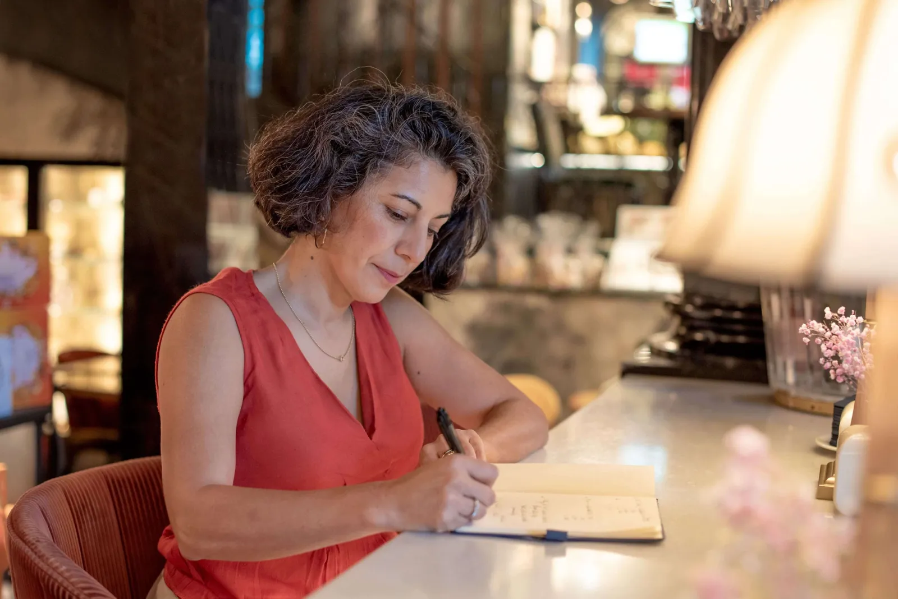

Periodista, marketer B2B y consultora internacional.
Periodista, marketer B2B y consultora internacional. Su perfil es poco habitual, y eso es justo lo que lo hace útil: la capacidad de encontrar historias (periodismo), la de venderlas (marketing B2B) y un sector que conoce a fondo (alimentación e ingredientes).
Al frente de Origenal Story está Claudia Vasquez, que reúne más de 25 años de experiencia en marketing internacional, branding y periodismo B2B en alimentación, ingredientes y sostenibilidad. El resultado: más de 100 proyectos estratégicos en más de 20 países.
Sabe cómo funcionan las ferias por dentro.
Claudia ha sido ponente y moderadora en Food Innovate Summit, Nutrevent y EcoLiving Sweden, y ha colaborado con SIAL Paris. Como periodista internacional freelance ha cubierto SIAL Paris, Anuga, Alimentaria, Biofach, Natexpo France, Fruit Logistica, in-cosmetics Global y Hi&Fi. No se limita a asistir a estos eventos: sabe cómo funcionan por dentro.

Idiomas: English · Español · Português · Français · Con base en Barcelona, España
Hablemos.
Reserva una conversación con Claudia en inglés, español, portugués o francés.
Empezar una conversación